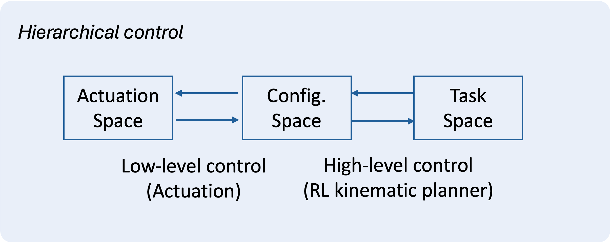
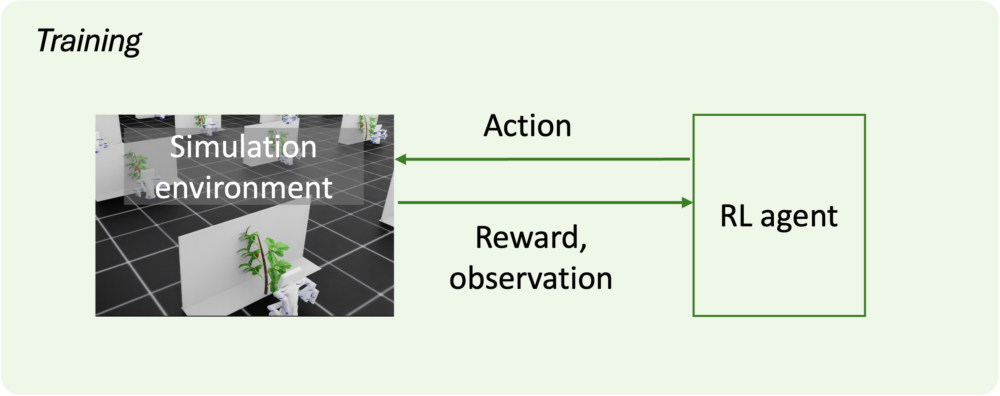
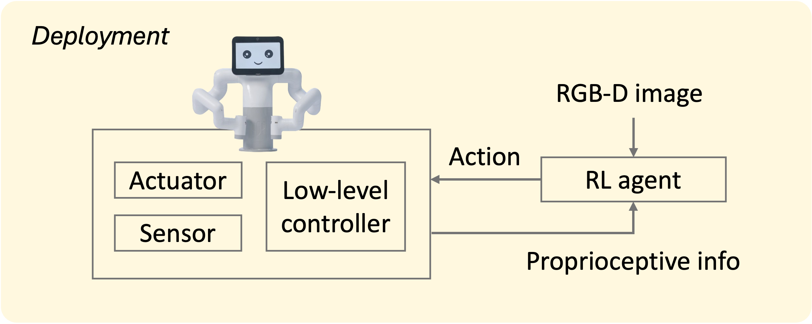

This paper presents an end-to-end deep reinforcement learning (RL) framework for occlusion-aware robotic manipulation in cluttered plant environments. Our approach enables a robot to interact with a deformable plant to reveal hidden objects of interest, such as fruits, using multimodal observations. We decouple the kinematic planning problem from robot control to simplify zero-shot sim2real transfer for the trained policy. Our results demonstrate that the trained policy, deployed using our framework, achieves up to 86.7% success in real-world trials across diverse initial conditions. Our findings pave the way toward autonomous, perception-driven agricultural robots that intelligently interact with complex foliage plants to "find the fruit" in challenging occluded scenarios, without the need for explicitly designed geometric and dynamic models of every plant scenario.

(a) Hierarchical control: high-level RL planner in task-configuration space + low-level actuator controller.

(b) RL agent learns kinematic exploration behaviors in simulation to expose occluded fruits.

(c) Trained policy receives real-time RGB-D + proprioception → task-space actions → physical robot.
This work is jointly funded from NSF-USDA COALESCE grant #2021-67021-34418 and AIIRA grant #2021-67021-35329.
@inproceedings{subedi2025find,
title = {Find the Fruit: Designing a Zero-Shot Sim2Real Deep RL Planner
for Occlusion Aware Plant Manipulation},
author = {Subedi, Nitesh and Yang, Hsin-Jung and Jha, Devesh K
and Sarkar, Soumik},
booktitle = {Proceedings of the IEEE International Conference on
Robotics and Automation (ICRA)},
year = {2026}
}